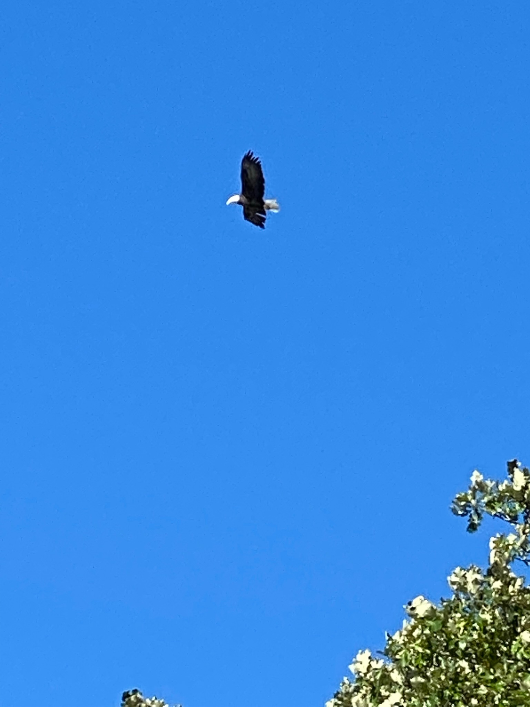
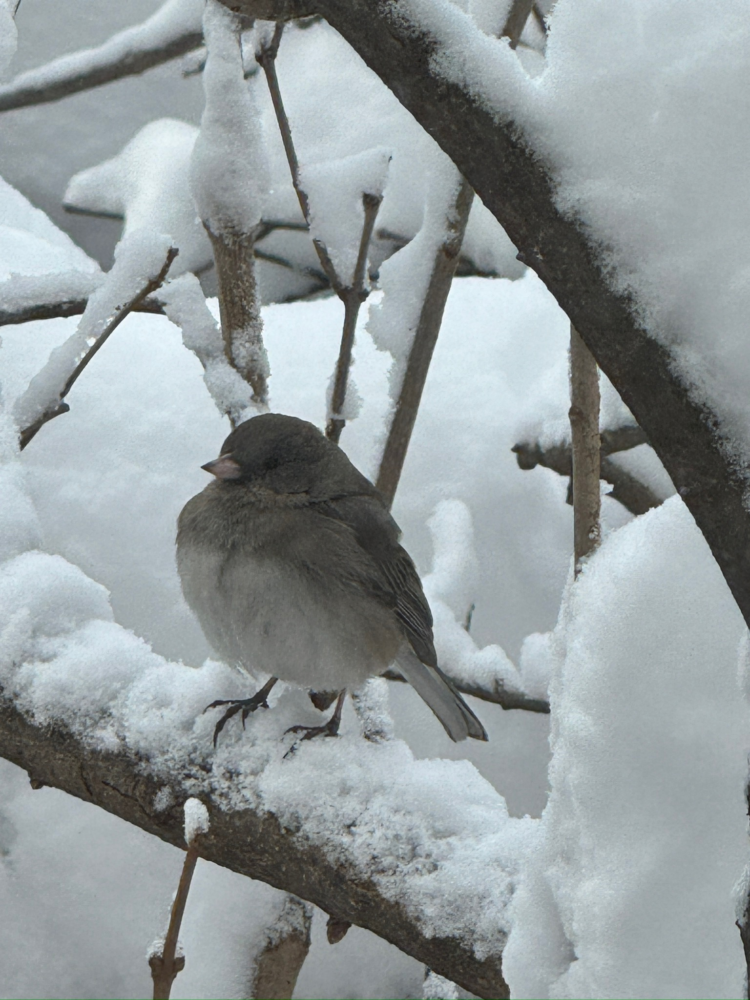
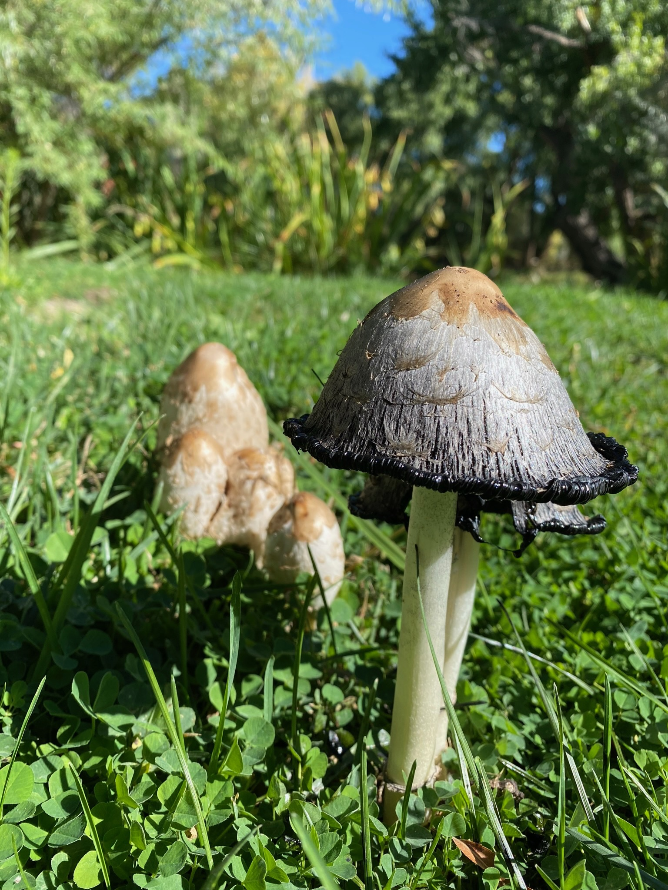
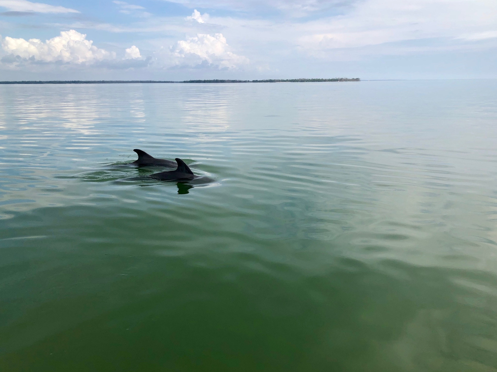

The morning after my mother died, a great horned owl I had never seen before stayed on the porch railing for almost an hour. It looked at me. It did not blink. I cried into a coffee cup until it lifted off.
Stories of signs and wonders
Accounts of allies showing up. They can be life-changing (peak) or just give you pause and make you wonder. We're here for it all and ready to help you find deeper meaning. Read about other people's experiences and feel what lands in your chest.
If you have your own, there is a place for it at the bottom of this page.
The morning after my mother died, a great horned owl I had never seen before stayed on the porch railing for almost an hour. It looked at me. It did not blink. I cried into a coffee cup until it lifted off.
I asked the river what to do about the job. I felt foolish saying it out loud. Then a stick — long, smooth, river-worn — bumped against my shin three times. I took it home. I quit the job two days later. The stick is on my desk.

The first time I asked for a sign, I asked for an eagle. I figured it was specific enough to be unmistakable and rare enough to be impossible. Three days later, one circled the parking lot at the grocery store. I sat in the car and laughed and cried at the same time.
Same coyote, three nights in a row, at the edge of the yard. Not afraid. Not waiting. Just — present. On the third night I sat down in the grass. We looked at each other for a long time. Something in me settled that has not unsettled since.
When my marriage ended, I started keeping the small flat stones I found on walks. By the end of that year I had a bowl of them on the kitchen table. I didn't know why I was doing it. Now I do. Every one of them held me, a little, on a day I needed holding.

The junco came to the kitchen window every morning of my father's last winter. After he died, it stopped. I told myself I was being silly. Then, on the one-year mark, it came back. Just for that morning.
I had been thinking, for weeks, about whether to leave. The night I decided, the wind came up so hard it took the porch screen door off its hinges and laid it flat on the lawn. The door — the literal door — was off. I was not going to be argued with.

A patch of mushrooms appeared overnight in the clover by the back step. The next morning they were gone. I would have missed them entirely if the dog hadn't insisted on going out. I sat with my coffee and thought: that's me lately. Up overnight. Someone please look before I'm gone.
I had been sober for ninety days when the deer came into the yard with her two fawns. She let me watch them nurse for ten minutes from the kitchen window, and then she looked right at me. I have not had a drink since. That was four years ago.

My grandmother used to say her people were dolphin people. I never knew what she meant. The day we scattered her ashes in the bay, two of them came inside the channel where they don't usually swim. They circled the boat once and left.
Add yours
Two or three sentences is plenty. Be specific — the hawk, not the bird. We read each one with care. With your permission, we may add yours to the wall.